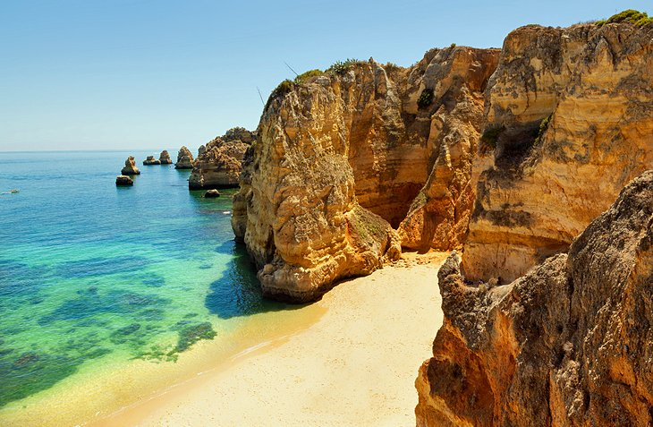
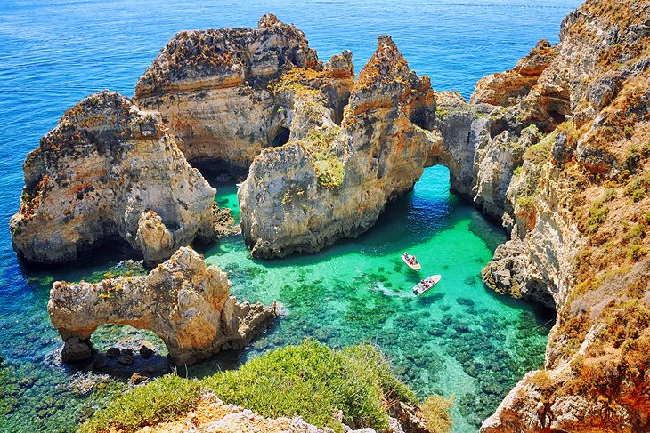
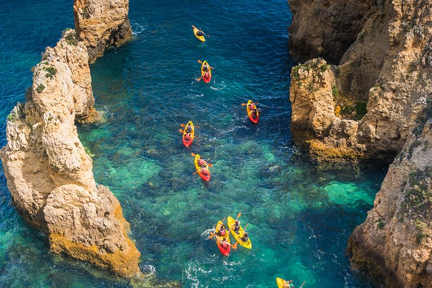
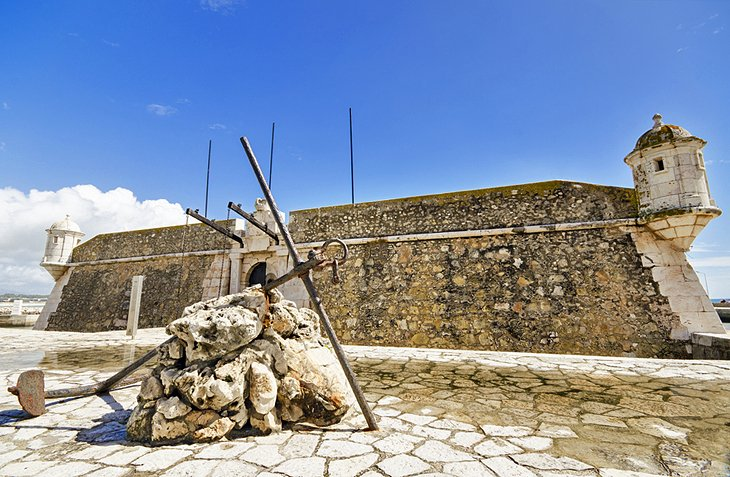

Lagos
Lagos is the largest city in Nigeria and the most populous city in Africa, with a population of 14.8 million as of 2015 within the city proper. The Lagos metropolitan area has a total population of roughly 23.5 million as of 2018, making it the the largest metropolitan area in Africa . Lagos is a major African financial centre and is the economic hub of Lagos State and Nigeria at large. Lagos is also among the top ten of the world's fastest-growing cities and urban areas. The megacity has the fourth-highest GDP in Africa and houses one of the largest and busiest seaports on the continent. The Lagos metropolitan area is a major educational and cultural centre in Sub Saharan Africa. Lagos initially emerged as a home to the Awori subgroup of the Yoruba of West Africa and later emerged as a port city that originated on a collection of islands, which are contained in the present day Local Government Areas (LGAs) of Lagos Island, Eti-Osa, Amuwo-Odofin and Apapa. The islands are separated by creeks, fringing the southwest mouth of Lagos Lagoon, while being protected from the Atlantic Ocean by barrier islands and long sand spits such as Bar Beach, which stretch up to 100 km (62 mi) east and west of the mouth. Due to rapid urbanization, the city expanded to the west of the lagoon to include areas in the present day Lagos Mainland, Ajeromi-Ifelodun and Surulere. This led to the classification of Lagos into two main areas: the Island, which was the initial city of Lagos, before it expanded into the area known as the Mainland. It is also a metropolitan city. This city area was governed directly by the Federal Government through the Lagos City Council, until the creation of Lagos State in 1967, which led to the splitting of Lagos city into the present day seven Local Government Areas (LGAs), and an addition of other towns (which now make up 13 LGAs) from the then Western Region to form the state. However, the state capital was later moved to Ikeja in 1976, and the federal capital moved to Abuja in 1991. Even though Lagos is still widely referred to as a city, the present-day Lagos, also known as "Metropolitan Lagos", and officially as "Lagos Metropolitan Area" is an urban agglomeration or conurbation, consisting of 16 LGAs including Ikeja, the state capital of Lagos State. This conurbation makes up 37% of Lagos State total land area, but houses about 85% of the state's total population. The exact population of Metropolitan Lagos is disputed. In the 2006 federal census data, the conurbation had a population of about 8 million people. However, the figure was disputed by the Lagos State Government, which later released its own population data, putting the population of Lagos Metropolitan Area at approximately 16 million. As of 2015, unofficial figures put the population of "Greater Metropolitan Lagos", which includes Lagos and its surrounding metro area, extending as far as into Ogun State, at approximately 21 million.
Beaches
Some of the Algarve's most celebrated beaches are located in the Lagos vicinity, with two easily reached on foot. Two kilometers southwest of the town center, Praia do Camilo is the postcard favorite. Framed by outcrops of fantastic rock formations, this sheltered slither of sand is illuminated in spring by a mantle of colorful flowers that cling to the cliff edge above. Arrive early during the summer to bag a spot, and note that by late afternoon, the beach is cast in shadow as the sun starts to dip behind the promontory. The vast Meia Praia starts its run behind the marina and stretches four kilometers to the east. Its name in English means "Half Beach" – a curious moniker given that this is the longest beach in the region. For sun-seekers, however, this translates as more sand, and there's ample space to relax and bronze up. It's an exposed beach, though, and popular with water sports enthusiasts. A number of restaurants line the dunes and a regular bus service from Avenida dos Descobrimentos serves its entire length. Out of town lies Porto de Mós. A fabulous coastal footpath leading from the Ponta da Piedade lighthouse will take walkers to this lovely beach, but allow an hour to hike the trail.
Ponta da Piedade
One of the most recognized natural landmarks in Portugal, the mournfully named "Point of Pity" is a scenic headland that juts out into the sea on the western edge of Lagos Bay. The dramatic sandstone cliffs appear burnished with gold, such is the vivid brilliance of their burnt ochre hue. Rising out of the transparent waters below are huge rock formations, some arched and contorted as if melted by the sun. Out of sight, tucked under the cliff face, is a series of caves and grottoes, their bellies carved out by restless Atlantic swells. These hidden caverns can be explored by boat on a fun-packed Ponta da Piedade grotto sightseeing cruise from Lagos, or an equally rewarding kayak tour. Back on terra firma meanwhile, sightseers can follow footpaths that snake around the headland to reach a number of viewpoints with dizzying views over the gnarled stacks and craggy pillars – a bizarre and beautiful seascape. For a romantic end of day finale, gather by the lighthouse that crowns the promontory and wait for the sun to set over the western Algarve coast.
Kayak Tours along the Coast
The coastline west out of Lagos is straight out of a pirate adventure picture book. The scenic, honeycombed cliffs; weird chimneystack rock formations; and the dozens of hidden sea caves and ancient grottos at Ponte da Piedade make for exhilarating exploration and are tourist attractions in themselves. One of the most exciting ways of charting a course along this incredible seascape is by joining a guided kayak and snorkel trip excursion. Paddle out over warm turquoise shallows for fisheye-views of this wonderfully evocative environment. Later, plunge into the Atlantic's alluring waters and marvel at the undersea world alive beneath you. Between forays, kayakers have the chance to soak up the sun on a deserted beach.
Forte Ponta da Bandeira
Built in the 17th century to defend the approaches to Lagos harbor, this square-shaped, pocket-sized fortress remains in remarkably good condition considering its age. Situated over a wedge of sand overlooking a shallow bay, four turrets shaped like spinning tops set at each corner help distinguish the fort's squat profile. A narrow moat lends the stronghold an impregnable quality, and sightseers have to cross a drawbridge to reach the inner courtyard. The visitor experience is limited to a small 18th-century chapel lined with pretty azulejos tiles, and exhibition space dedicated to Portugal's era of discoveries. From the ramparts however, visitors can enjoy uninterrupted views over the water and back across the avenue towards the castle walls and fortifications that uphold the medieval character of the vicinity.